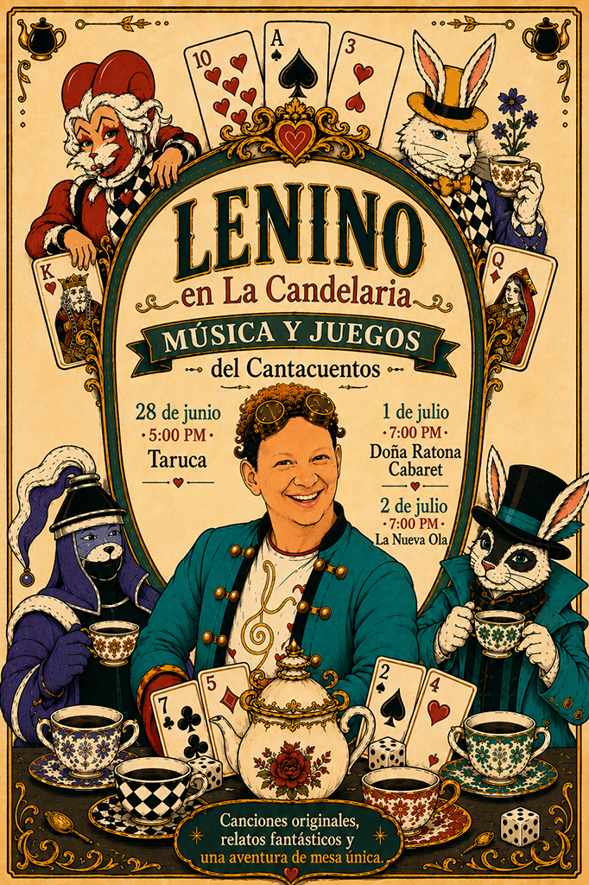
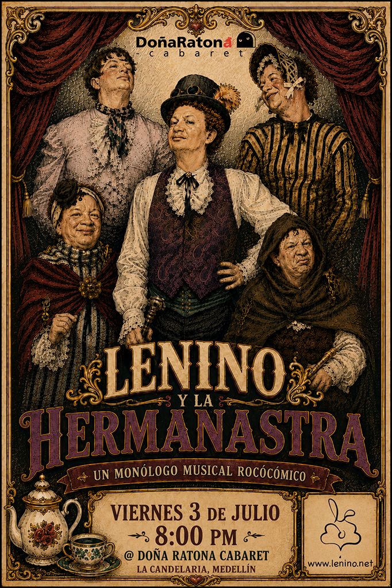

28 de junio · 5:00 PM
TarucaMúsica y Juegos con el Cantacuentos
Una semana de canciones originales, relatos fantásticos, juegos de mesa y un monólogo musical rococómico en Medellín.


Música y Juegos con el Cantacuentos
Música y Juegos con el Cantacuentos
Música y Juegos con el Cantacuentos
Lenino y La Hermanastra
Un monólogo musical rococómico
Participa en las noches de juego, colecciona monedas, gana insignias y entra al sorteo de una copia de JACK RABBITS.
Tres monedas te dan acceso a beneficios especiales durante La Hermanastra.
Lenino es cantacuentos, músico, creador de juegos y artista dominicano radicado en Nueva York. Sus proyectos mezclan canciones originales, relatos fantásticos, humor, tecnología y experiencias lúdicas para compartir.
Con el apoyo de:
Andrés Sánchez · Tablero Mágico · Doña Ratona Cabaret · Taruca · La Nueva Ola